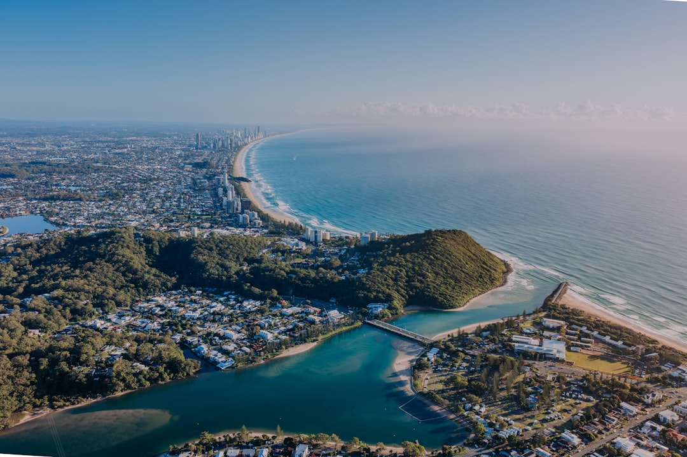

Gold Coast retaining wall projects need three early decisions: wall material, drainage detail and whether engineering or approval is triggered. The source page lists typical local costs from around $250 to $800 per square metre, with timber usually lower and concrete, block and stone higher. Walls over 1m or carrying a surcharge are described as engineered work designed to AS 4678 with RPEQ Form 15 certification and Gold Coast City Council approval.
For homeowners comparing retaining wall contractors gold coast options, the useful starting point is a clear brief that covers height, access, soil, drainage, material preference and approval risk.
Retaining Wall Contractors Gold Coast Explained
Retaining Wall Gold Coast presents retaining work as a site-specific decision, not a catalogue choice. Before comparing retaining wall contractors gold coast, define what the wall must hold back, whether it also shapes a garden or driveway, and whether nearby loads may affect design.
A small garden terrace, a low boundary wall and a taller engineered wall are different buying decisions. The source page separates concrete sleepers, timber sleepers, besser block, rock and boulder walls, gabions, drainage systems, engineered walls, repairs and replacement. That structure is useful because it turns the conversation from appearance alone to material, height, access, drainage and compliance.
- Ask the contractor to describe the wall height, retained ground and any surcharge they have assumed.
- Confirm whether the quote includes excavation, spoil removal, posts, sleepers or blocks, backfill and drainage.
- Ask whether engineering, certification or council approval has been allowed for, excluded or listed separately.
Material Choices Are Also Site Choices
Concrete sleepers are described by the source page as steel-reinforced and set between galvanised posts, which suits many engineered coastal and hinterland blocks. Timber sleeper walls are framed as a garden, terrace and low boundary option using H4-treated hardwood or pine. Besser block walls are described as core-filled and steel-reinforced for taller engineered retaining and rendered finishes.
Natural sandstone and boulder walls are presented as battered-back, rugged and free-draining, while gabion baskets use rock-filled wire baskets for sloping and erosion-prone sites. None of those options is automatically best. The stronger question is which material fits the retained height, access for machinery, desired finish, drainage path and approval position.
For broader context on the related search topic, this companion guide to retaining walls on the Gold Coast is useful when you are still comparing wall purpose before narrowing the contractor brief.
Drainage Belongs In The Quote
The source page treats ag-drain, gravel and geofabric behind the wall as part of the structural detail, not a late add-on. That matters when comparing quotes because the cheapest line item may not be pricing the same wall system. Ask each contractor to identify the drainage materials, outlet path and backfill assumptions in writing.
Do not rely on a quote that simply says retaining wall without showing what happens behind it. A better quote states the material, length, height, foundations or posts, drainage layers, disposal, engineering and approval costs where relevant. For repairs, ask whether the contractor is assessing a localised section, the whole failed wall, or full replacement.
- Where will collected water discharge?
- Is geofabric included behind the wall?
- Does the wall need ag-drain, gravel backfill or another subsoil system?
- Are approval and design costs included or separate?
Who This Applies To
This guide is most relevant to Gold Coast homeowners arranging a new retaining wall, replacing a cracked or bulging wall, terracing a sloping garden, improving a driveway edge, or checking whether a taller wall needs engineering. It also helps owners who are comparing coastal blocks with sandy ground, canal or waterfront sites, older residential blocks, hillside suburbs and hinterland properties, but only where those conditions affect the wall brief.
The source page names locations from Southport, Surfers Paradise, Broadbeach and Burleigh Heads through to Robina, Varsity Lakes, Nerang, Ashmore, Bundall, Mudgeeraba, Tamborine Mountain, Springbrook, Coomera, Helensvale and Pacific Pines. Use those examples as prompts for site questions, not as proof that one suburb needs one fixed wall type. Access, slope, soil, drainage and council triggers still need project-level checking.
Approval, Certification And Quote Discipline
The source page says walls over 1m or carrying a surcharge are engineered walls designed to AS 4678 with RPEQ Form 15 design certification and Gold Coast City Council approval. If your wall may sit in that category, ask retaining wall contractors gold coast candidates to separate construction pricing from design, certification and approval costs so the comparison is fair.
ASIC Moneysmart's renovation guidance is a useful budgeting reference because retaining work can sit inside a broader home improvement spend. Keep a written scope, avoid vague exclusions and ask what changes the price after assessment. Housing Industry Association and Master Builders Australia are also relevant general industry references when checking how builders and trades communicate scope, contracts and renovation expectations.
A disciplined project review should finish with a written quote that lists scope, materials, drainage and any engineering or approval costs, which is exactly the quote format described on the source page.
- Measure the basics. Record approximate length, height, access points and what the wall needs to retain before requesting quotes.
- Describe the site. Note slope, nearby structures, drainage issues, visible cracking or bulging and any access limits.
- Ask about compliance. Check whether the contractor expects engineering, certification or Gold Coast City Council approval to be part of the project.
- Compare written scopes. Review materials, drainage, excavation, disposal, approvals and exclusions rather than comparing headline totals only.
| Option | Best fit from source page | Quote question |
|---|---|---|
| Timber sleeper | Gardens, terraces and low boundary retaining | Is the timber H4-treated hardwood or pine and what drainage is included? |
| Concrete sleeper | Engineered coastal and hinterland blocks | Are sleepers steel-reinforced and posts galvanised? |
| Besser block | Taller engineered retaining and rendered finishes | Does the price include core filling, steel reinforcement and design items? |
| Rock, boulder or gabion | Free-draining finishes for sloping or erosion-prone sites | How is the wall battered, filled and drained? |
Common questions
What should I ask before choosing a retaining wall contractor? Ask what wall type they recommend, what height and load assumptions they used, how drainage is handled, and whether engineering or council approval is included. A fixed written quote should show scope, materials, drainage and any approval costs.
How much does a retaining wall cost on the Gold Coast? The source page states a typical local range of around $250 to $800 per square metre. It says timber sleeper walls are usually lower, while concrete, block and stone walls sit higher because of labour and engineering needs.
When does a retaining wall need engineering? The source page identifies walls over 1m or carrying a surcharge as engineered work designed to AS 4678 with RPEQ Form 15 certification and Gold Coast City Council approval. Ask the contractor to confirm the trigger for your site.
Is drainage really part of the retaining wall system? Yes, according to the source page, ag-drain, gravel and geofabric behind the wall are the structural detail that helps prevent failures in sandy, clay and hinterland soils. Make the drainage specification part of the quote.
This guide covers material choice, drainage, quote structure, repairs and approval questions for Gold Coast retaining wall projects.